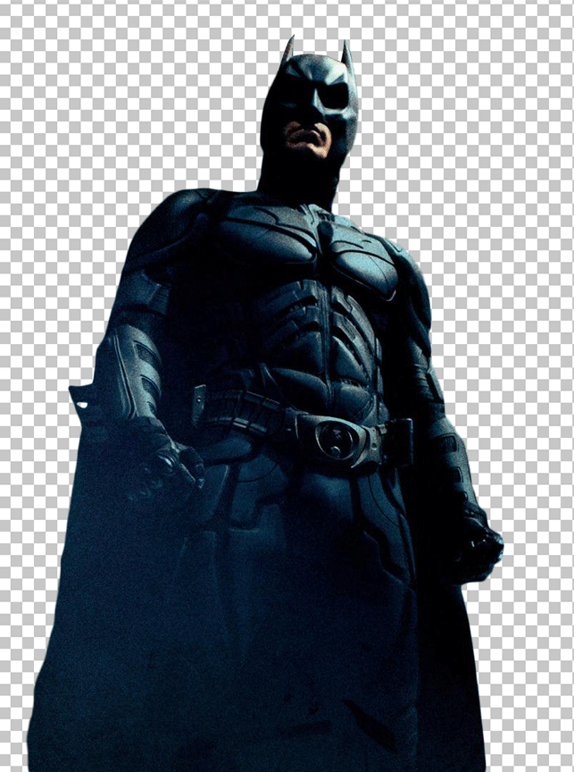

EXCLUSIVE / THE PERSON BEHIND THE CODE
WHO IS
TAHA ZERRAD?
I’m Taha, an engineering student turning curiosity into code. From full-stack foundations to AI, data and cloud — learning every day, building after dark.
EXAMINE THE WORKAN INDEPENDENT MIND. AN UNFINISHED STORY.
The Gotham TimesA chronicle of code, curiosity & a little controlled chaos.
EXCLUSIVE / THE PERSON BEHIND THE CODE
I’m Taha, an engineering student turning curiosity into code. From full-stack foundations to AI, data and cloud — learning every day, building after dark.
EXAMINE THE WORK
Exploring AI, data and cloud systems. Building a stronger foundation, one experiment at a time.
PROFILE / TAHA ZERRAD
I didn’t start with all the answers. I started with HTML, CSS and a stubborn need to understand how things work. At OFPPT–ISMO, that curiosity became a diploma in web development.
Now, I’m studying Computer Engineering and Networks. I’m building a stronger foundation in software while exploring the worlds of artificial intelligence, data and cloud computing. The goal is simple: keep learning until I can build things that matter.
“The work is the story.FOLLOW THE JOURNEY ON GITHUB
Make it worth reading.”
WEB DEVELOPMENT
Three weeks. One team. A cinema experience brought to life with code.
DATA EXPLORATION
Finding the story inside the numbers. An exploration of Python and visual analytics.
THE FIRST CHAPTER
The humble calculator that turned curiosity into something I could actually use.
The tools I build with, the systems I’m exploring,
and the things that keep me up past midnight.
A foundation in web development.
Turning ideas into working interfaces.
Exploring the patterns behind the data.
Learning to ask better questions.
Understanding how systems fit together.
Building stronger engineering habits.
These are tools in a growing toolkit. Mastery is the mission, not a claim.
05 / THE SIGNAL IS OPEN
A project, an idea, or a good conversation.
Every great collaboration starts with a signal.